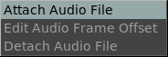
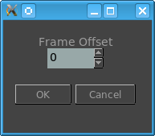

The Audio Menu

The Audio Menu allows attaching a new audio to the movie or sequence being played. It is useful to test, for example, lip syncing in an animated movie.
The Edit Audio Offset opens a requester to allow offsetting the audio forwards or backwards by a number of frames.

The Detach Audio File, removes the current audio and restates the original audio of a movie if it came with audio..